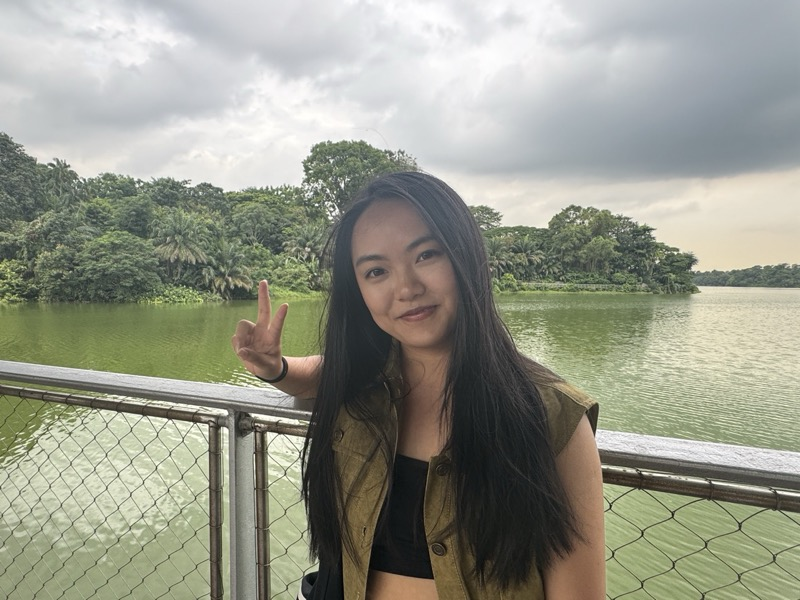
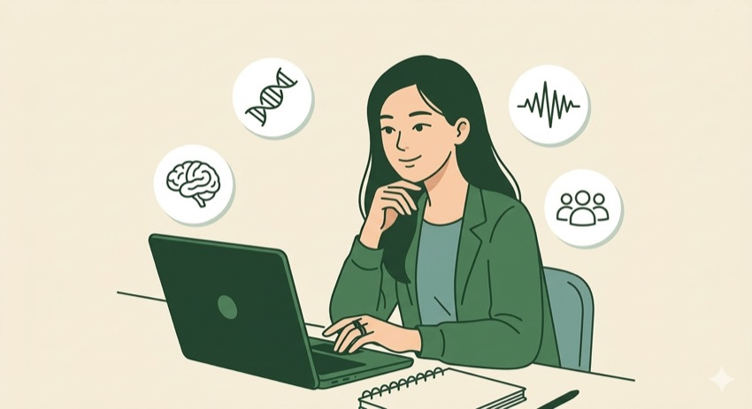
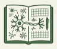
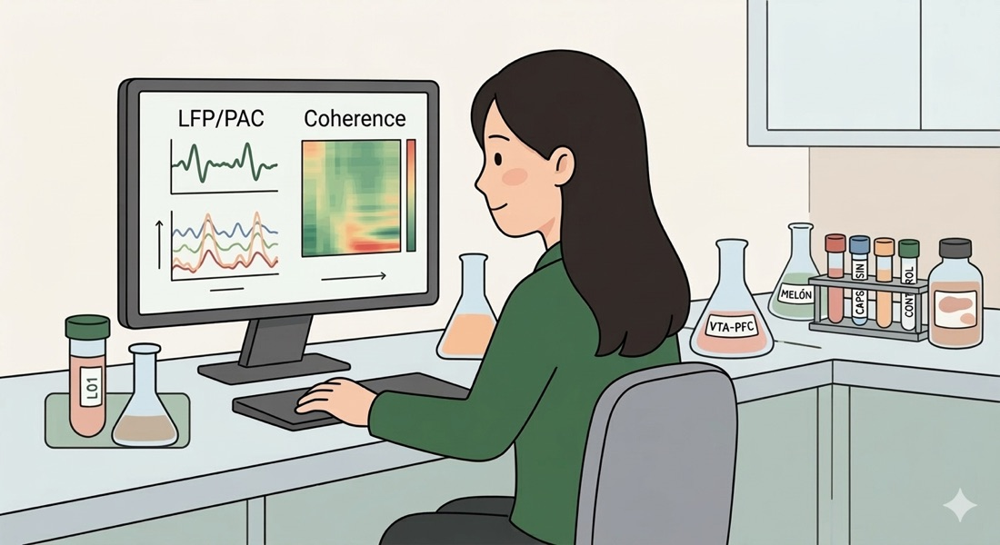
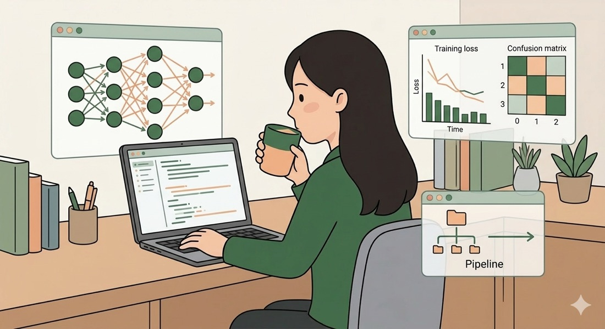
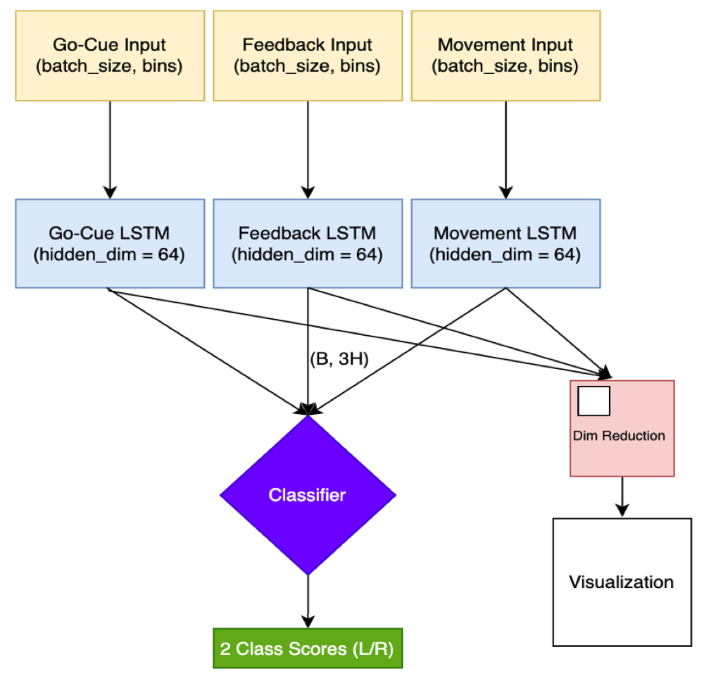
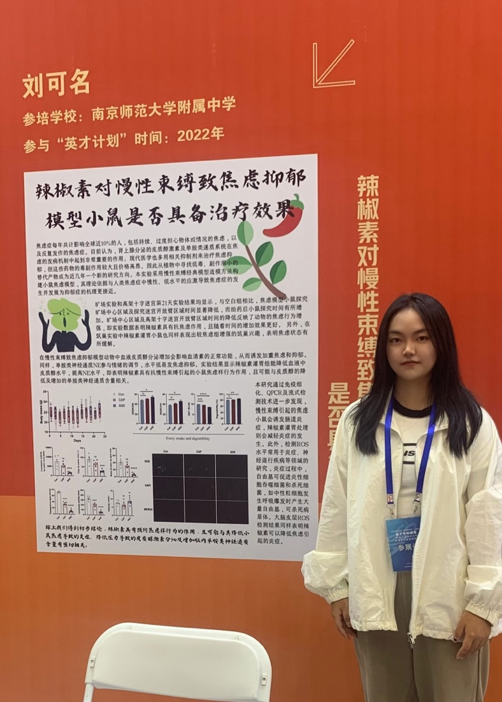
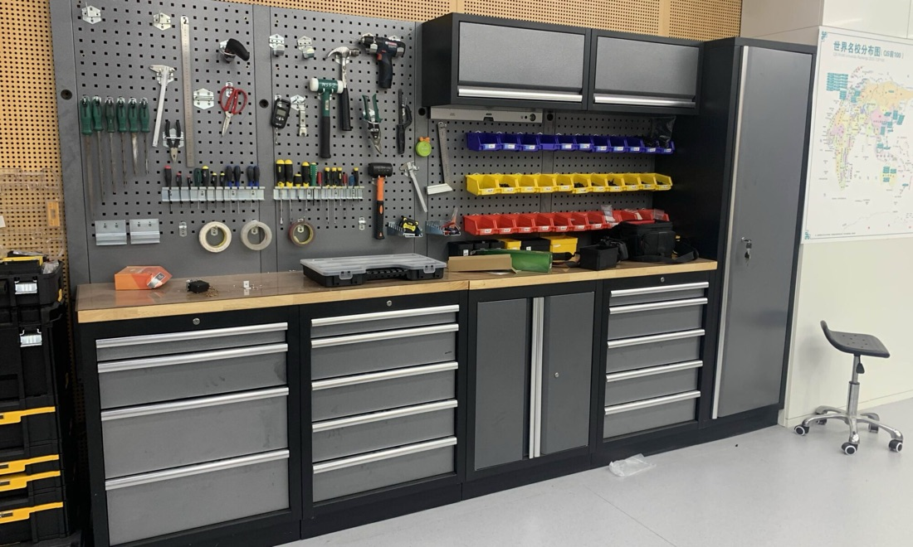
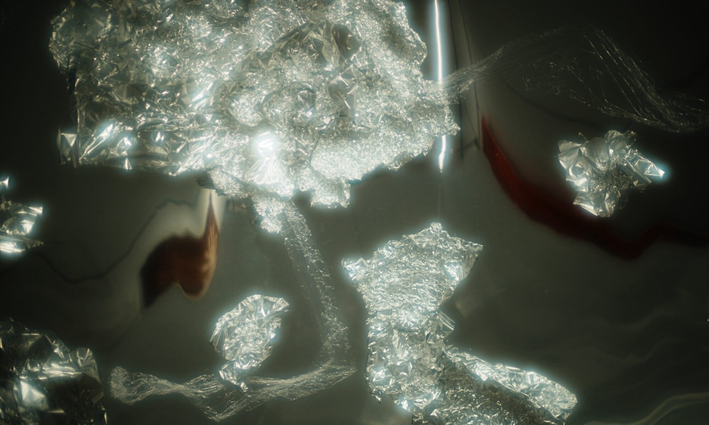

Molecular & experimental
Immunohistochemistry, fluorescence assays, plasmid work, rodent behavioral assays
Computational models for biological systems.
I move across molecules, neural circuits, and behavior to ask what mechanisms sit behind what we observe.
Move across the scale to inspect a current question.
Reinforcement learning for visually guided gap-crossing behavior in a physically simulated rodent.
SENIOR THESIS · 2026–27Connecting energetic constraints with the cancer mutational landscape.
MELÓN LAB · 2025Frequency-specific communication between VTA and PFC under ethanol exposure.

I am a senior at Wesleyan University studying Biology, Mathematics, and Integrative Sciences. Biology gives me systems worth understanding; mathematics gives me ways to formalize them; computation gives me another way to experiment.
Outside the analysis, drawing, teaching, and travel keep changing what I notice—and how I explain it to someone else.
Research across molecular systems, neural circuits, behavior, and interpretable models—connected by an interest in the mechanisms behind observed patterns.
I am especially interested in analyses that keep neural dynamics tied to behavior, rather than treating signal processing as a detached technical exercise.
I care about models most when they help clarify what is being learned, which is why interpretability has become central rather than optional in my ML work.
A recurring part of my work is turning messy analysis into reusable structure: cleaner code, better figures, and pipelines that remain legible when the question evolves.

I’m most drawn to research that connects neural data, behavior, and interpretation, especially when the analysis itself becomes part of the scientific question rather than just a way of presenting the answer.
Biology, Mathematics, and Integrative Sciences at Wesleyan • moving toward graduate work in computational neuroscience
Reinforcement-learning experiments testing how a physically simulated rodent crosses gaps, responds to visual changes, and stops at uncrossable gaps.
Token-level SHAP analysis across three transformer-based models to examine which linguistic features contribute to automated originality scores.
Event-aligned LFP analysis of VTA-PFC coordination using PSD, coherence, PAC, and Granger causality in the context of social behavior and ethanol exposure.
This is the path behind the current work: lab placements, training programs, and the environments where I learned to move between experimental detail, analysis, and research communication.

ResearchImmunohistochemistry, fluorescence assays, plasmid work, rodent behavioral assays
Spike trains, spectral analysis, coherence, PAC, Granger causality
Regression, mixed-effects models, ANOVA, cross-validation
Reinforcement learning, CNNs, LSTMs/BiGRUs, transformers, SHAP
COMPUTING FOUNDATION Python · MATLAB · R · NumPy · Pandas · scikit-learn · PyTorch · TensorFlow · Linux/Unix · HPC/Slurm
Selected and supporting work across computational biology, neuroscience, behavior, and interpretable machine learning. Open a project for its question, approach, and research context.
Reinforcement-learning experiments separating visual control, positional memorization, and stopping behavior in a physically simulated rodent.
LFP analysis of theta-band VTA→PFC communication during social interaction and ethanol exposure.
Token-level SHAP analysis across three transformer models to identify linguistic contributors to automated originality scores.
A 430K-parameter CNN-BiGRU classifier evaluated across five folds and 6,624 respiratory-audio samples.
A 21-day stress model combining behavioral assays with ROS fluorescence measurements to evaluate capsaicin effects.
A senior thesis integrating computational mutagenesis with cancer mutation data to study the p53 mutational landscape.
Kauffman-network mutation-sensitivity simulations with an emphasis on computational efficiency.
Problem: What does a reinforcement-learning policy use to cross gaps, and can it learn when not to jump?
Approach: Varied rewards, visual input, gap width, starting position, and evaluation conditions in a physically simulated rodent.
Conceptual task sequence showing approach, visual evaluation, and action selection. This is not a result plot.
Summer Undergraduate Research Fellow in the Talmo Lab and Salk Center for AI and Research Computing, June–August 2026. Selected as 1 of 10 Salk SURF fellows.
The project shifted the question from whether the virtual rat could cross a gap to what information and reward structure supported the behavior. Visual ablations and uncrossable gaps helped distinguish successful performance from the strategy the policy had actually learned.
Presented “Eliciting Deliberation Before a Gap Jump in a Virtual Rat” at the Salk SURF Capstone and Talmo Lab research meeting in August 2026.
Problem: How does ethanol alter VTA-PFC neural coordination during social interaction?
Approach: Analyzed approximately 8 hours of VTA-PFC LFP recordings from 24 mice using coherence, PAC, Granger causality, and mixed-effects models.
Result: Ethanol reduced theta-band VTA→PFC Granger causality while PFC→VTA connectivity remained comparatively stable.

Identified reduced theta-band VTA→PFC Granger causality under ethanol exposure while PFC→VTA connectivity remained comparatively stable. Presented at the Wesleyan Summer Experience Presentation in July 2025 and Research Pathways Showcase in January 2026.
What made this work especially interesting was that integrating behavior with neural analyses required more than stacking methods together; I had to keep revising the pipeline so the metrics remained interpretable in the context of the experiment rather than drifting into abstraction.
Problem: Are creativity prediction models capturing genuine linguistic patterns or statistical artifacts?
Approach: Developed an HPC-based token-level SHAP pipeline for three transformer-based originality-scoring models.
Result: Found that token rarity alone did not explain originality attributions; semantic distance and token length also correlated with SHAP scores.
Illustrative values, not study data: brighter, longer bars show how token-level contributions can be visualized.
A novel response can feel precise without becoming too easy to predict.
Presented “An Analysis of Automated Creativity Scoring Models Using Explainable AI” with A. Tran at the Data Insights Student Speaker Series in March 2026.
What changed in my thinking during this project was that interpretability stopped feeling like a secondary add-on; it became the main way to tell whether the model was actually learning something meaningful.
This work highlights the critical need for interpretability in ML models applied to creative or subjective tasks. I'm particularly interested in how these methods can reveal the difference between genuine pattern recognition and dataset-specific artifacts, a distinction that matters across all ML applications in cognitive science.
Problem: How far can cough-audio features support exploratory classification of COVID-19 status in a research setting?
Approach: A 430K-parameter CNN-BiGRU classifier with audio-quality filtering, augmentation, and spectral feature extraction across three public datasets.
Result: Across 5 folds and 6,624 samples, the model achieved 0.926 PR-AUC, 90.6% COVID-positive recall, and 0.892 F1.

Amplitude of the raw cough signal over time, similar to what you would see in a basic audio editor.
A compact spectral representation of respiratory audio used as input to the classifier.
Achieved 0.926 PR-AUC, 90.6% COVID-positive recall, and 0.892 F1 across five folds and 6,624 samples.
One challenge here was learning not to trust aggregate performance at face value when the underlying data were substantially imbalanced.
This project made me more careful about data imbalance, bias, and the difference between a promising model and a clinically meaningful one.
Problem: Can we predict movement intention from pre-motor cortical activity?
Approach: A three-stage LSTM decoder using 567-dimensional MOp/MOs activity aligned to three behavioral events.
Result: Built a pipeline for classifying left-versus-right movement choices from cortical neural activity.
Completed as a Deep Learning Scholar at Neuromatch Academy in August 2025.
What kept me engaged was that decoding intention from temporal neural activity required thinking simultaneously about model design, data structure, and the timing of the behavior itself, rather than treating prediction as a purely engineering problem.

Overview of the LSTM decoding pipeline linking cortical spike trains to left/right movement decisions.
Raster plot animation illustrating neural population activity around movement initiation.
This project sharpened my interest in temporal neural data and in models that stay close to the structure of the behavior they are trying to decode.
Problem: Can capsaicin treatment reduce anxiety-like behavior in chronically stressed mice?
Approach: 21-day chronic restraint stress model with behavioral assays and oxidative stress markers.
Result: The study examined whether capsaicin treatment was associated with reduced anxiety-like behavior and oxidative stress markers.
Combined behavioral assays with ROS fluorescence measurements to evaluate whether capsaicin could mitigate anxiety-like behavior and oxidative stress in a chronic-stress mouse model.
This project taught me early that careful experimental design matters most when the result is not guaranteed to be clean; the interpretation only became convincing when the behavioral and biochemical pieces could speak to each other.

Presenting my work at the Jiangsu High School Students’ Science Symposium through a poster presentation.
This early research experience introduced me to the importance of rigorous experimental design and statistical analysis in neuroscience. It sparked my interest in understanding the biological mechanisms underlying behavioral change, a theme that continues in my current computational work on neural circuit dynamics.
Question: How do energetic constraints shape which p53 mutations appear in cancer?
Approach: Integrating computational mutagenesis with cancer mutation data.
Status: Senior thesis in progress at Wesleyan University.
This project brings together my interests in computational modeling and biological mechanism. The analysis is ongoing, so the site describes the research question and approach without presenting preliminary results as conclusions.
Problem: How sensitive are genetic regulatory networks to mutations across different attractor states?
Approach: Simulated Kauffman Boolean networks with mutation sensitivity analysis on local machines.
Result: Explored attractor-dependent vulnerability patterns and the computational trade-offs involved in scaling the simulations.
Click “Simulate mutation cascade” to see how activity spreads across a small Boolean network toy example.
What I found compelling here was how quickly a simple model can become difficult to reason about at scale, which made computational efficiency and conceptual clarity feel like part of the same problem.
Different attractor states showed varying degrees of sensitivity to mutations, suggesting that network topology and current state jointly determine robustness. Some attractors were remarkably stable, while others were highly vulnerable to single-node perturbations. This has implications for understanding biological robustness and evolvability.
This project taught me the importance of computational efficiency in large-scale simulations, even when running on local machines. What started as a straightforward modeling question became an exercise in thinking about optimization and potential future scaling. I'm interested in extending this approach to more realistic network topologies informed by empirical gene regulatory data, and exploring how network structure shapes evolutionary dynamics.
Research, art, travel, and the quieter habits of attention that shape how I work.
I like the point when an analysis stops depending on memory and starts becoming something another person could follow.

Art and music keep teaching me the same lesson: sometimes things get better the second I stop squeezing them so hard.

I seem to do well when several lines of thought are open at once, as long as they still add up to a shape I can trust.

Some of the people I remember most are the ones who entered a day briefly and made it easier.

At Wesleyan, I started noticing that I rarely learn in a single lane for very long. My semesters have often included science, mathematics, art, music, and language work all at once, alongside jobs, mentoring, and projects that asked for different kinds of attention.
At first, I mostly experienced that range as pressure. I wanted to do everything well, and I tended to respond by tightening up. Over time, I have become more interested in a different question: not how to fit more in, but how to keep different commitments in conversation without flattening any of them.
That shift has changed how I think about busyness. I still like full days, but I care more now about whether the pace has structure. When it does, moving between research, teaching, and creative work feels less like fragmentation and more like a way of keeping my mind awake.
I work best with some range in my life, as long as the range still has form. That has become one of the quiet conditions for doing my strongest work.
I usually know a workflow is improving when I stop being afraid to touch it. At the beginning of an analysis, one change can break something three steps later, and part of the logic may still live only in my memory. I like finding those fragile points and slowly making the path easier to follow, rerun, and revise.
In my neuroscience work, an analysis can move through Brainstorm, MATLAB, Python, and R before it becomes a figure. The difficult part is not simply getting each method to run. It is keeping track of what changed between steps and whether the final result still answers the biological question that started the analysis. When I revise a pipeline, I keep returning to that thread.
Presenting “Statistical Approaches for Neural Oscillation and Social Behavior Analysis in the Ventral Tegmental Area” at Exley Science Center, Wesleyan University, Middletown, CT
I approach machine-learning results in a similar way. A score alone does not tell me enough; I want to know what the model seems to be using, how stable that pattern is, and what the figure might tempt a reader to conclude too quickly. Interpretation changes what I check, not just how I describe the result afterward.
This is also where design enters my research. While making a figure or poster, I think about what someone will notice first, what comparison should be easy, and what needs more explanation. Alignment, spacing, hierarchy, and color are small choices, but together they can reveal whether I understand the analysis well enough to guide another person through it.
When I first came to Wesleyan, I signed up for Drawing I without having done anything close to serious drawing before. I thought drawing was mostly about control: getting every line right, correcting mistakes, and working until the picture looked “perfect.” Then we were assigned a life-size self-portrait, and I threw myself into it.
I spent hours moving between the mirror and the huge sheet of paper. Sometimes I erased the same part of my face five or six times because it still did not look right. I was working hard, but I was also fighting with the drawing. At the time, those felt like the same thing.
One day, my professor came by, looked at what I was doing, and said softly, "It's not about how much time you spend or how many details you fix. It's about the flow of the whole drawing." That stopped me.
I stepped back. Instead of returning immediately to the face, I looked at how the lines connected and how the figure occupied the page. The drawing was still imperfect, but it became less stiff. It finally had some air in it.

Later, in private jazz vocal lessons, I ran into the same problem. During improvisation, I tried to plan the notes that would sound “right,” and the result sounded rigid. My professor asked me to stop constructing the phrase and let it come out more naturally. I understood the instruction before I could actually follow it.
I still have a competitive streak, and I still dislike leaving something in a state of “not good enough.” Stepping back does not come naturally to me. But drawing and singing have made me more willing to notice when effort has turned into gripping—and to leave a little room for something I did not plan.
On the afternoon I finished my abstract algebra final, I walked out of the classroom feeling emptied out by the semester. I graded some assignments, bought a drink, and started heading home to pack for Peru. Outside Allbritton, I realized that my phone was gone.
I retraced my steps and then ran home to open Find My. Someone had found the phone and brought it to Olin Library. I never learned who. A stranger had noticed something I lost, carried it across campus, and left it somewhere I could find it again.
A few days later, during a layover in Lima, I saw another Chinese traveler struggling to communicate with airport staff about her missing bag. I stopped to translate and helped her figure out where it had gone. While we were looking, I kept thinking that if my mother were alone and anxious in an unfamiliar airport, I would hope someone nearby would do the same for her.
On a later flight, I sat beside an older couple. We talked for a while, and before leaving, the woman opened her bag and showed me several bracelets she had made. She asked me to choose one. I picked the bracelet that said “Journey,” and she handed it to me as casually as if people gave handmade objects to strangers every day.
These encounters were small. I did not become close friends with any of these people, and most of us never exchanged contact information. Still, I remember them as clearly as some of the places I traveled to.
The returned phone, the recovered bag, and the bracelet did not carry the weight of lifelong relationships. They mattered precisely because nobody was obligated to do anything. For a few minutes, one person noticed what another person needed and decided to help carry it.

I still have the bracelet. It reminds me that many days are held together by people who enter them briefly and then disappear.